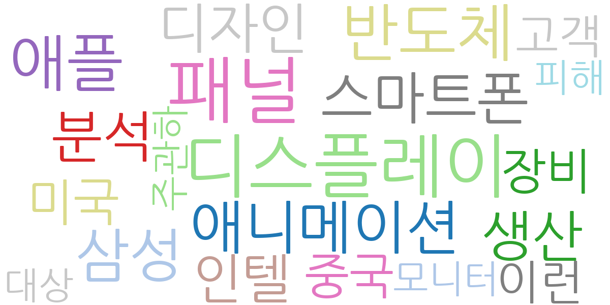
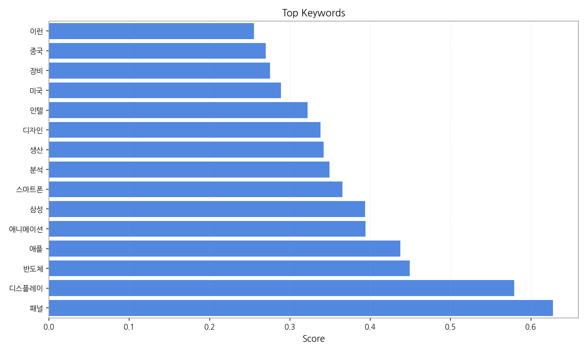
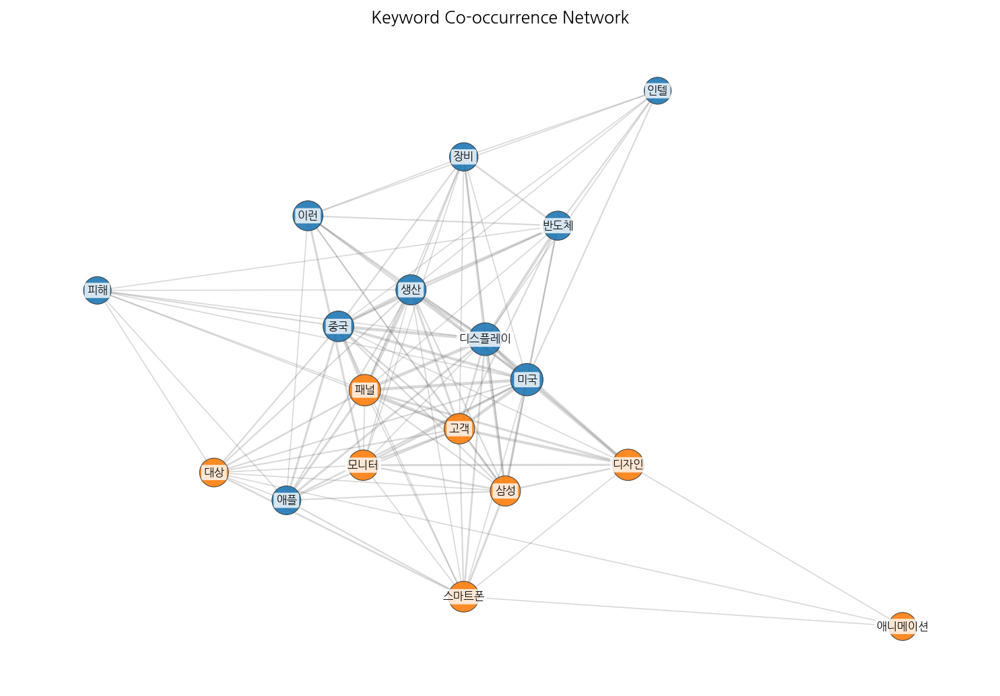
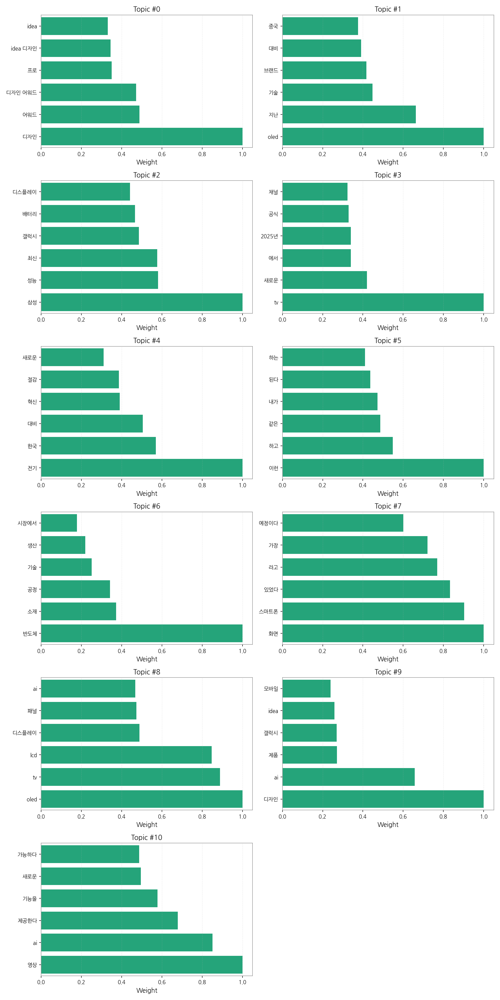
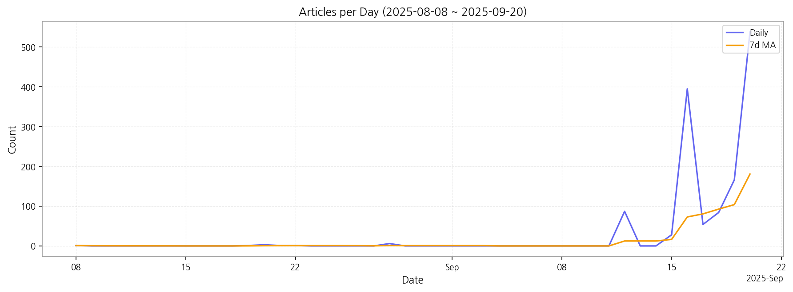

1) 상위 토픽을 3개 주제로 묶어 핵심 맥락을 설명하면 다음과 같습니다. 첫째, 삼성전자의 최신 제품 및 기술에 대한 뉴스가 주를 이룹니다. 갤럭시 시리즈의 성능, OLED 및 LCD 디스플레이 기술, 그리고 새로운 TV 모델 출시 등 삼성전자의 다양한 제품 라인업과 기술적 혁신에 대한 내용이 주요하게 다뤄지고 있습니다. 둘째, 디자인 및 AI 기술 관련 뉴스가 두드러집니다. 제품 디자인 어워드 수상 소식과 AI 기반의 영상 처리 기술, 디자인에 AI를 접목한 새로운 제품 개발 등 디자인과 AI 기술의 융합이 중요한 화두임을 보여줍니다. 마지막으로, 전기차 및 에너지 효율 관련 뉴스도 상당 부분을 차지합니다. 전기차 관련 기술 혁신과 에너지 절감 기술에 대한 보도를 통해 친환경 기술 및 에너지 효율 향상에 대한 사회적 관심을 반영하고 있습니다.
2) 최근 변화/스파이크를 살펴보면, 9월 16일 기사 수가 급증(395건)한 것을 확인할 수 있습니다. 이는 특정 제품 출시 발표 또는 중요한 기술 발표와 같은 주요 이벤트가 있었음을 시사합니다. 이후에도 9월 중순부터 9월 말까지 기사 수가 꾸준히 높게 유지되고 있어 해당 이벤트의 영향이 지속되고 있음을 알 수 있습니다.
3) 실무 인사이트 3가지:

| Rank | Keyword | Score |
|---|---|---|
| 1 | 패널 | 0.628 |
| 2 | 디스플레이 | 0.579 |
| 3 | 반도체 | 0.449 |
| 4 | 애플 | 0.438 |
| 5 | 애니메이션 | 0.394 |
| 6 | 삼성 | 0.394 |
| 7 | 스마트폰 | 0.366 |
| 8 | 분석 | 0.349 |
| 9 | 생산 | 0.342 |
| 10 | 디자인 | 0.338 |
| 11 | 인텔 | 0.322 |
| 12 | 미국 | 0.289 |
| 13 | 장비 | 0.275 |
| 14 | 중국 | 0.270 |
| 15 | 이런 | 0.255 |




1) 상위 토픽을 3개 주제로 묶어 핵심 맥락을 설명하면 다음과 같습니다. 첫째, 삼성전자의 최신 제품 및 기술에 대한 뉴스가 주를 이룹니다. 갤럭시 시리즈의 성능, OLED 및 LCD 디스플레이 기술, 그리고 새로운 TV 모델 출시 등 삼성전자의 다양한 제품 라인업과 기술적 혁신에 대한 내용이 주요하게 다뤄지고 있습니다. 둘째, 디자인 및 AI 기술 관련 뉴스가 두드러집니다. 제품 디자인 어워드 수상 소식과 AI 기반의 영상 처리 기술, 디자인에 AI를 접목한 새로운 제품 개발 등 디자인과 AI 기술의 융합이 중요한 화두임을 보여줍니다. 마지막으로, 전기차 및 에너지 효율 관련 뉴스도 상당 부분을 차지합니다. 전기차 관련 기술 혁신과 에너지 절감 기술에 대한 보도를 통해 친환경 기술 및 에너지 효율 향상에 대한 사회적 관심을 반영하고 있습니다.
2) 최근 변화/스파이크를 살펴보면, 9월 16일 기사 수가 급증(395건)한 것을 확인할 수 있습니다. 이는 특정 제품 출시 발표 또는 중요한 기술 발표와 같은 주요 이벤트가 있었음을 시사합니다. 이후에도 9월 중순부터 9월 말까지 기사 수가 꾸준히 높게 유지되고 있어 해당 이벤트의 영향이 지속되고 있음을 알 수 있습니다.
3) 실무 인사이트 3가지:
| Idea | Target | Value Prop | Score |
|---|---|---|---|
| 디스플레이 제조사 대상 AI 기반 생산 효율 관리 플랫폼 | KR 전자 제조업체(디스플레이 패널 생산), 중견/대기업, 생산 관리 부서 | AI 기반 예측 분석으로 불량률 감소 및 생산 효율 향상을 제공합니다. 실시간 데이터 모니터링 및 이상 징후 조기 감지 기능을 통해 문제 발생 전 예방적 조치가 가능합니다. 경쟁사 대비 차별화된 AI 알고리즘을 통해 정확도 높은 예측 및 분석을 제공합니다. | 4.50 |
| B2B 디스플레이 사이니지 맞춤형 디자인 서비스 | JP 중소/중견기업, 마케팅/홍보 부서, 매장 운영 사업자 | AI 기반 디자인 자동 생성 및 전문 디자이너 협업을 통해 기업 맞춤형 사이니지 디자인을 빠르고 저렴하게 제공합니다. 다양한 디자인 템플릿과 브랜드 가이드라인 연동으로 브랜드 일관성을 유지하며, 실시간 디자인 수정 및 피드백을 통해 만족도를 높입니다. 경쟁사 대비 빠른 제작 기간과 합리적인 가격을 제공하는 것이 차별점입니다. | 4.00 |
| 전기차용 디스플레이 부품 조달 플랫폼 | EU 전기차 제조사, 부품 구매 담당자, 대기업 | 다양한 디스플레이 부품 공급업체를 연결하고, 투명한 가격 비교 및 품질 관리 시스템을 제공하는 플랫폼입니다. 실시간 재고 확인 및 주문 관리 기능을 통해 부품 수급 안정성을 확보하고, AI 기반 부품 추천 기능을 통해 최적의 부품 선택을 지원합니다. 경쟁사 대비 다양한 부품 선택지와 효율적인 조달 시스템을 제공하는 것이 차별점입니다. | 3.80 |
| 디스플레이 산업 데이터 분석 및 예측 서비스 | KR 디스플레이 관련 기업, 시장 분석 담당자, 중소/중견기업 | 다양한 데이터 소스를 활용하여 디스플레이 시장 동향을 분석하고 미래를 예측하는 서비스입니다. AI 기반 예측 모델을 통해 정확도 높은 시장 예측 및 경쟁사 분석을 제공하며, 맞춤형 시장 분석 보고서를 통해 의사결정을 지원합니다. 경쟁사 대비 정확하고 시의적절한 데이터 분석 및 예측을 제공하는 것이 차별점입니다. | 3.50 |
| 패널 | 기업(B2B) | 패널 도입으로 비용/품질/경험을 개선. | 3.00 |